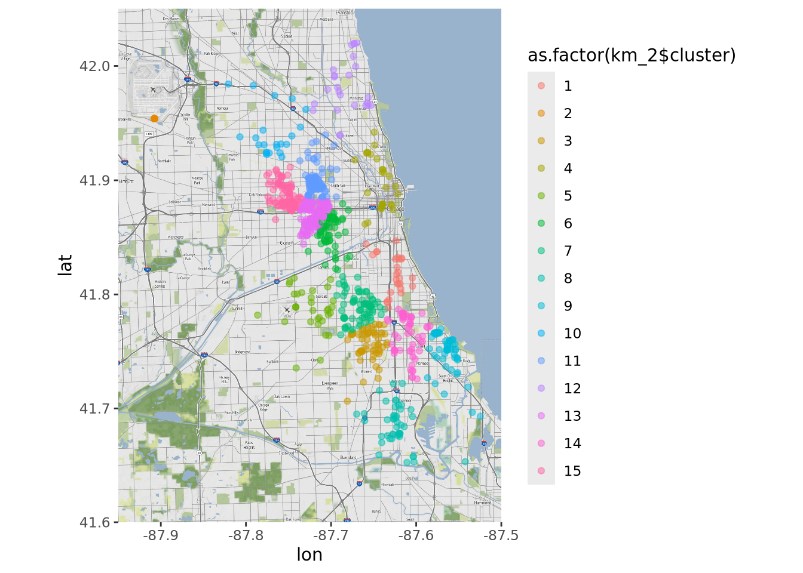
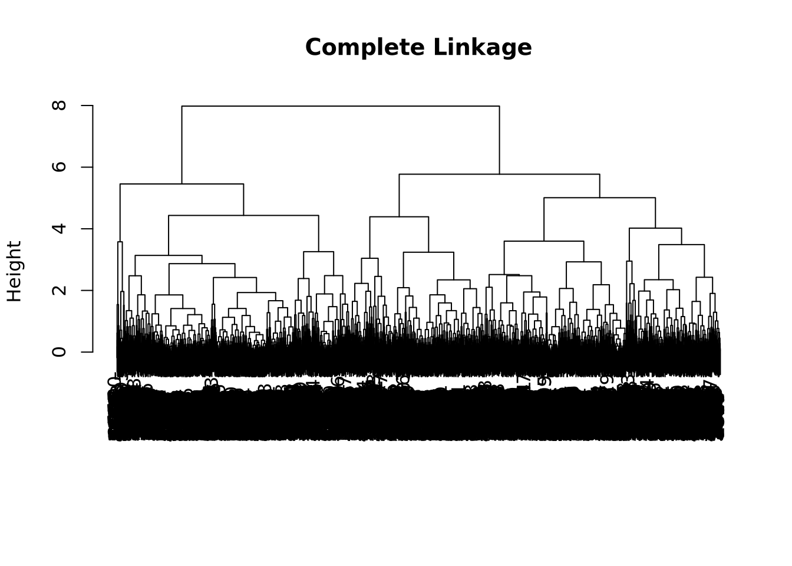

── Conflicts ────────────────────────────────────────── tidyverse_conflicts() ──
✖ dplyr::filter() masks stats::filter()
✖ dplyr::lag() masks stats::lag()
ℹ Use the conflicted package (<http://conflicted.r-lib.org/>) to force all conflicts to become errors
library(magrittr)
Attaching package: 'magrittr'
The following object is masked from 'package:purrr':
set_names
The following object is masked from 'package:tidyr':
extract
library(ggmap)
ℹ Google's Terms of Service: <https://mapsplatform.google.com>
Stadia Maps' Terms of Service: <https://stadiamaps.com/terms-of-service/>
OpenStreetMap's Tile Usage Policy: <https://operations.osmfoundation.org/policies/tiles/>
ℹ Please cite ggmap if you use it! Use `citation("ggmap")` for details.
Attaching package: 'ggmap'
The following object is masked from 'package:magrittr':
inset
library(factoextra)
Welcome! Want to learn more? See two factoextra-related books at https://goo.gl/ve3WBa
library(lubridate)library(corrplot)
corrplot 0.95 loaded
Data
In the first part of this notebook, we use the Chicago crime data that is provided via the Socrata API. This data “… is extracted from the Chicago Police Department’s CLEAR (Citizen Law Enforcement Analysis and Reporting) system.” Here we only pull in data from January 2018.
Starting with some data exploration, the ggmap package provides some nice options to plot data on maps. Here we plot the location of crime incidents in Chicago in January 2018, colored by arrest. First, we get the map using StadiaMaps API key. You can get your API key by signing up and generating the API key here: https://docs.stadiamaps.com/authentication/
api_keys <-read_csv("~/repos/api-keys.csv")
Rows: 3 Columns: 2
── Column specification ────────────────────────────────────────────────────────
Delimiter: ","
chr (2): key_id, key
ℹ Use `spec()` to retrieve the full column specification for this data.
ℹ Specify the column types or set `show_col_types = FALSE` to quiet this message.
ℹ 48 tiles needed, this may take a while (try a smaller zoom?)
ggmap(map)
ggmap(map) +geom_point(data = cc_2018, aes(x = longitude, y = latitude, color = arrest), alpha =0.5)
We can also focus on specific types of crimes. For this, we can first filter crimes using primary_type and then plot the results based on location, faceted by type.
In the previous graph, narcotics-related crimes seem to cluster at certain locations. We can use Clustering to structure our data and find groups of crime incidents that occurred at similar locations. First, we create a subset of the crimes of interest.
Then, we can run `kmeans()` to employ K-Means Clustering. Based on the previous plot we assume that a three cluster solution is adequate. Note that `nstart` can be used to try out several starting points for the clusters.
Given the K-Means three cluster solution, we can again plot our crime incidents, now colored by cluster membership.
ggmap(map) +geom_point(data = c_data, aes(x = longitude, y = latitude, color =as.factor(km_1$cluster)), alpha =0.5)
However, grouping crime locations into three clusters might not be the optimal solution. We can utilize fviz_nbclust to compute the within cluster sums of squares over a range of cluster solutions and to visualize the result.
fviz_nbclust(c_data, #data set we want to use kmeans, #cluster methodmethod ="wss", #method used for estimating the optimal number of clustersk.max =25)
Based on the “elbow” criterion, we may want to choose k = 6 as the optimal number of clusters in this case. Therefore, we run kmeans() again and also plot the new cluster solution to inspect the new result.
km_2 <-kmeans(c_data, 15, nstart =20)ggmap(map) +geom_point(data = c_data, aes(x = longitude, y = latitude, color =as.factor(km_2$cluster)), alpha =0.5)

Lets add another variable to find clusters that build on more information. We might be interested which crime incidents are related with respect to location and the time of the day they occur. First, we create a new subset of the Chicago crime data.
This time we use hierarchical clustering to find clusters. This clustering approach needs a distance matrix as input, which can be computed with dist().
Hierarchical clustering is implemented in hclust(). To demonstrate that Clustering is very sensitive to the parameters being used, we create three cluster objects based on three types of linkage methods.
The dendograms of the cluster results show how observations are merged to create clusters. On this basis, we can pick the number of clusters we want to extract by stopping the fusion process at a certain point. rect.hclust() can be used to highlight a specific cluster solution.
plot(hc_complete, main ="Complete Linkage", xlab ="", sub ="")

plot(hc_average, main ="Average Linkage", xlab ="", sub ="")
plot(hc_ward, main ="Ward", xlab ="", sub ="")rect.hclust(hc_ward, k =6, border ="red")
We want to create six clusters based on the hc_ward object.
For our data, plotting the crime incidents on a map, colored by cluster membership, is again very helpful to interpret the clustering results.
cc_arrest <- cc_2018 %>%filter(arrest =="TRUE")ggmap(map) +geom_point(data = cc_arrest, aes(x = longitude, y = latitude, color =as.factor(cutree(hc_ward, 6))), alpha =0.5)
Data II
In this section, we use the Census API to gather data from the American Community Survey (ACS). The censusapi package provides a nice R interface for communicating with this API. This requires an access key, which can be obtained here:
There are many Census API endpoints, which can be listed using listCensusApis().
apis <-listCensusApis()View(apis)
From here on, we will focus on acs/acs5 (ACS 5-Year data). Another useful helper function is listCensusMetadata(), which can be used to gather some information about the regional level on which data might be available.
name geoLevelDisplay referenceDate requires wildcard
1 us 010 2016-01-01 NULL NULL
2 region 020 2016-01-01 NULL NULL
3 division 030 2016-01-01 NULL NULL
4 state 040 2016-01-01 NULL NULL
5 county 050 2016-01-01 state state
6 county subdivision 060 2016-01-01 state, county county
optionalWithWCFor
1 <NA>
2 <NA>
3 <NA>
4 <NA>
5 state
6 county
To narrow down queries based on location, the following websites list the regional codes that are used by the Census Bureau.
name
1 for
2 in
3 ucgid
4 B99104_007E
5 B24022_060E
6 B11011_007E
label
1 Census API FIPS 'for' clause
2 Census API FIPS 'in' clause
3 Uniform Census Geography Identifier clause
4 Estimate!!Total!!Not living with own grandchildren under 18 years
5 Estimate!!Total!!Female!!Service occupations!!Food preparation and serving related occupations
6 Estimate!!Total!!Family households!!Other family
concept
1 Census API Geography Specification
2 Census API Geography Specification
3 Census API Geography Specification
4 ALLOCATION OF LENGTH OF TIME GRANDPARENT RESPONSIBLE FOR OWN GRANDCHILDREN UNDER 18 YEARS FOR THE POPULATION 30 YEARS AND OVER
5 SEX BY OCCUPATION AND MEDIAN EARNINGS IN THE PAST 12 MONTHS (IN 2016 INFLATION-ADJUSTED DOLLARS) FOR THE FULL-TIME, YEAR-ROUND CIVILIAN EMPLOYED POPULATION 16 YEARS AND OVER
6 HOUSEHOLD TYPE BY UNITS IN STRUCTURE
predicateType group limit predicateOnly hasGeoCollectionSupport
1 fips-for N/A 0 TRUE <NA>
2 fips-in N/A 0 TRUE <NA>
3 ucgid N/A 0 TRUE TRUE
4 int B99104 0 <NA> <NA>
5 int B24022 0 <NA> <NA>
6 int B11011 0 <NA> <NA>
attributes required
1 <NA> <NA>
2 <NA> <NA>
3 <NA> <NA>
4 B99104_007EA <NA>
5 B24022_060EA,B24022_060M,B24022_060MA <NA>
6 B11011_007EA,B11011_007M,B11011_007MA <NA>
The following website also contains information on which variables are available for the ACS 5-Year data.
Next, we prepare the data for PCA. We want to extract principle components in order to condense the set of demographic features that we have in our data set. In this context, it’s also useful to display a scatterplot matrix before running PCA.
acs_sub <- acs_il %>%drop_na(.) %>%select(-c(state, county, tract, NAME)) %T>%pairs(.)
PCA
Principle Component Analysis is implemented in prcomp(). It is advisable to run PCA on variables that are on the same scale, i.e. we want to use scale. to scale our features prior to the analysis.
pca <-prcomp(x = acs_sub, scale. =TRUE)
How many components are needed? We can assess the importance of each component by investigating the amount of variance explained.
Another way of inspecting the PCA result is looking at the squared coordinates ((loadings * the component standard deviations)^2), which indicate how good a variable is represented by a given component.
var <-get_pca_var(pca)corrplot(var$cos2, is.corr =FALSE)
Finally, a biplot can be used to display both the scores and the loadings of a PCA result. However, its readability depends on the number of observations and features that were used in the analysis.